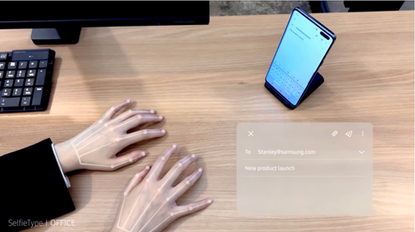

<div class="container midContainer">
  <div class="Content3"> 
      <div class="row">
          <div class="col-md-12">
              <div class="text-center bottom15px"><h1 class="font-bold bottom25px">Samsung Showcases \'SelfieType\' Virtual Keyboard at CES 2020</h1></div>
          </div>
      </div>
      <div class="row  bottom25px" style="background-color:black;padding-top:20px;">
          <div class="col-md-12 desktop-padding" style="padding: 15px 25px 15px 25px;">
              <div class="career-description bottom25px" style="color: black;">
                      
                      <p></p><p>The sophistication of the smartphone is currently proven to bring a lot of convenience for its users. But for business typing for a long time, smartphones can not be said to be comfortable because it has a small keyboard size for our large fingers, so typo also often occurs.</p>
                      <p>Well, Samsung now has a potential solution to overcome this problem. At the CES 2020 event, Samsung showed off a new keyboard technology called SelfieType.</p>
                      <p>SelfieType is an experimental virtual keyboard that relies on a selfie camera aka front camera and artificial intelligence (AI).</p>
                      <p>Armed with a front camera and AI, SelfieType users can type without touching the phone. The patented SelfieType AI engine analyzes finger movements that come from the front camera, and converts them into a QWERTY keyboard input.</p>
                      <p>SelfieType does not require additional hardware. In addition, this virtual keyboard is called easy to adapt to various mobile devices such as smartphones, tablets and laptops.</p>
                      <p>SelfieType is part of the C-Lab Inside program, which is basically a project created by Samsung employees.</p>
                      <p><em>Source By : www.teknologi.id</em></p>
                      <p></p>
              </div>
          </div>
      </div>   
  </div>    
</div>